← Índice de los 69 tutes de IDA
Tute 63 · Segmentación y paginación x86
se conecta con: Fuera de alcance
INTRODUCCIÓN AL REVERSING CON IDA PRO DESDE CERO PARTE 63.
SEGMENTACION Y PAGINACION DE MEMORIA PARA ARQUITECURA x86
En esta parte del tutorial trataremos de ver el manejo de memoria en x86 y mas adelante trataremos de actualizarlo para 64 bits.
Este es un tema denso, incluye tablas que hay que entender y aprender a ubicar así que iremos despacio.
Veamos algunos conceptos choreados de Internet
Memoria Real también llamada Física o Memoria RAM.
Esta memoria es empleada para el almacenamiento de instrucciones y ejecución de procesos en nuestra computadora, la capacidad de esta memoria es la capacidad real con la que cuenta nuestra máquina para ejecutar nuestros programas.
Memoria Virtual
La Memoria Virtual más que una memoria como tal es una técnica utilizada en la computación para simular que se tiene una mayor capacidad de Memoria Real, la técnica consiste en pasar cierta cantidad de archivos al disco duro para almacenarlos allí momentáneamente, en cuanto son requeridos los datos, estos son enviados de regreso a la Memoria Real para su ejecución.Al aplicar esta técnica se puede obtener una mayor capacidad para la ejecución de instrucciones, sin embargo, esta también conlleva sus desventajas, como podría ser el hecho de que las aplicaciones ejecutadas por Memoria Virtual podrían correr de manera más lenta, esto debido a que el tiempo requerido por el sistema para acceder a los datos es mucho mayor que el tiempo requerido para acceder a los datos almacenados por Memoria Real.
Cuando se utiliza toda la RAM, se usa la memoria virtual, que es usar espacio en el disco para simular más memoria real de la que tenemos.
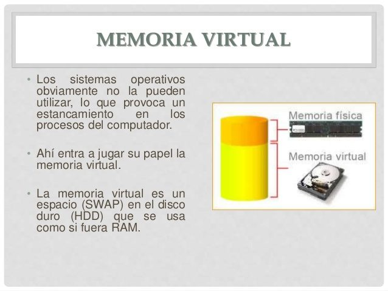
Allí vemos en la imagen que el sistema operativo toma la memoria física que tiene, mas la memoria virtual (swap) y en x86 crea para cada proceso un espacio de direcciones virtuales que son las direcciones que vemos en nuestro debugger cuando trabajamos cotidianamente.
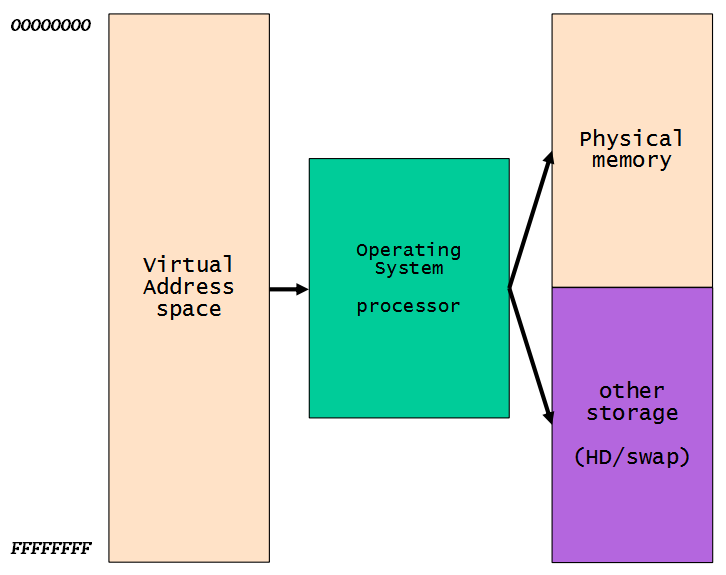
Estas direcciones virtuales para cada proceso comienzan en la dirección 0 y terminan en 0xffffffff y en Windows la mitad inferior o sea desde 0x0 hasta 0x7fffffff corresponde a la parte de nivel usuario donde residen los ejecutables y módulos del programa, la parte desde 0x7fffffff hasta 0xffffffff corresponde al kernel.
Por lo tanto, vemos que como cada proceso tiene un espacio de memoria con las mismas direcciones, el tema es que el mismo trabaja con direcciones virtuales, o sea en mi proceso por ejemplo 0x401000 tiene determinado código y en otro proceso la misma dirección virtual 0x401000 tiene un código diferente o otra cosa, y es que ambos corresponden a direcciones físicas o reales diferentes en la memoria.
DIRECCIONES FISICAS Y DIRECCIONES VIRTUALES
Una dirección virtual es lo que ve una aplicación o lo que vemos cuando debuggeamos, una dirección física o real es lo que el hardware real y el sistema operativo ven.
MODO REAL
Intel, para mantener compatibilidad con versiones anteriores en sus procesadores (excepto IA-64) lo que hace es que en su estado inicial (después del reinicio) el procesador se inicia en un modo llamado modo real, durante el proceso de arranque del sistema operativo, el procesador se cambia al modo protegido.
Se utiliza en el modo real la segmentación, que es un método antiguo de manejo de memoria, allí cada dirección lógica apunta directamente a la memoria física.
Veamos algunos ejemplos (era 286-386):
La arquitectura 286 introdujo 4 segmentos: CS (segmento de código) DS (segmento de datos) SS (segmento de pila) ES (segmento adicional).
physical_address : = segment_part × 16 + offset
Si tengo la dirección
06EFh:1234h
Para calcular la dirección física multiplico la parte del segmento por 16 (0x10 hexa) y le sumo el offset.
0x6ef *0x10+ 0x1234
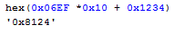
Y obtengo 0x8124 que es la dirección física, no vamos a ahondar mas en el modo real pues ya no se usa salvo por cuestiones de compatibilidad.
MODO PROTEGIDO
En el modo protegido la parte del segmento es reemplazada por un selector de 16 bits, aunque la translación a dirección física es un poco más compleja.
Existen los llamados registros de control que vimos por encima en las partes anteriores como deshabilitar SMEP tocando el cr4, pero en este caso el que nos importa es el CR3.
CR3
Used when virtual addressing is enabled, hence when the PG bit is set in CR0. CR3 enables the processor to translate linear addresses into physical addresses by locating the page directory and page tables for the current task.
Bueno vemos que se utiliza para convertir direcciones virtuales en físicas, así que tratemos de ver cómo usarlo, obviamente desde un proceso en modo user no podremos tener los privilegios para acceder a leerlo, así que deberemos debuggear el kernel como hemos visto en las partes anteriores.
Vamos a la parte práctica que es la que mas me gusta.
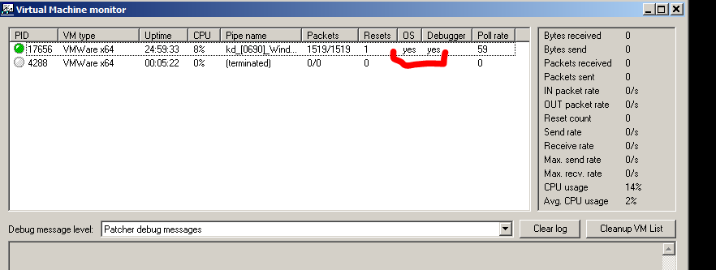
Ahí arranque el sistema operativo y estoy debuggeando por ahora con Windbg.
Voy a arrancar una calculadora que será el proceso donde voy a trabajar.
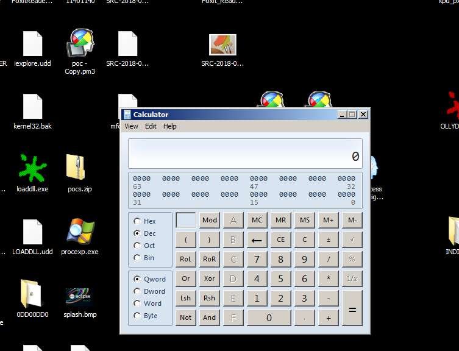
Ahora en el Windbg hago BREAK para que se detenga.
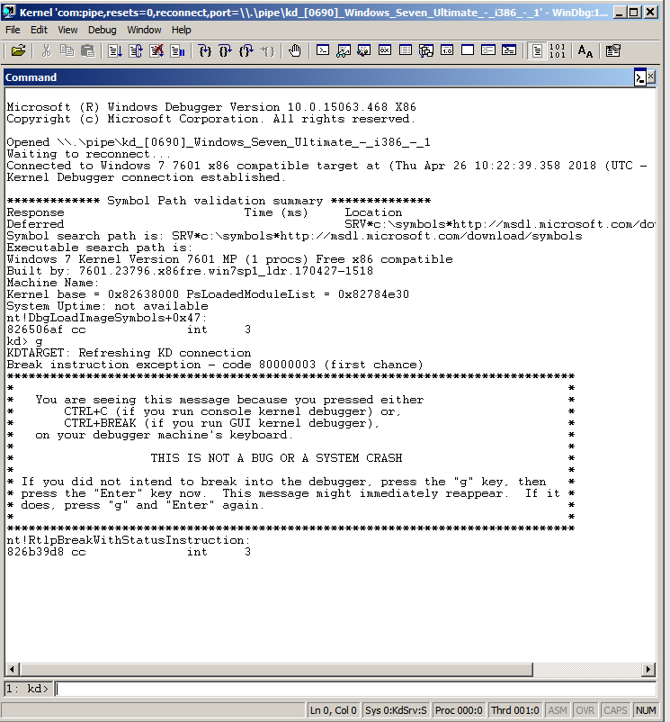
Cambiemos el contexto al del proceso calc.
!process 0 0
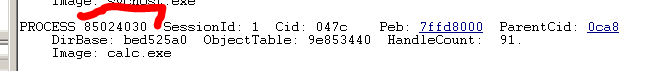
.process /i 85024030
Y luego G
Para saber el proceso actual
!process -1 0
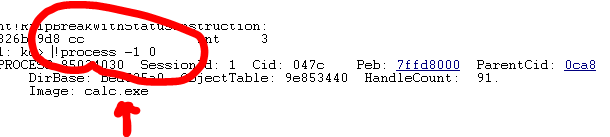
Ya estamos en el proceso calc.
Veamos el valor del registro CR3 con
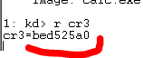
Recuerden que este comando funciona solo debuggeando kernel, debuggeando en user mode no funciona.
Bueno CR3 contiene la dirección física de la PAGE DIRECTORY TABLE (ya veremos que esto tiene un agregado si esta habilitado PAE)
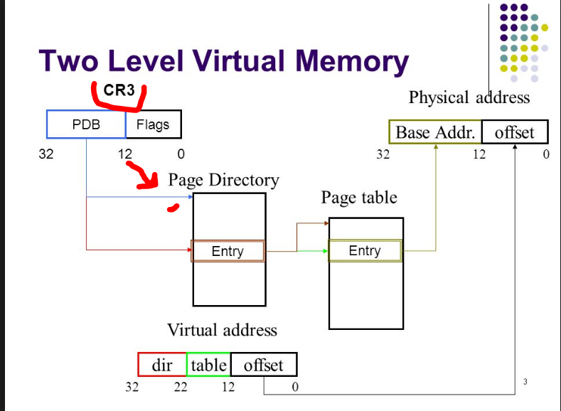
Estamos en la parte inicial del dibujo la idea es que CR3 nos apunta a la dirección física de la Page Directory Table (PDT) que es el primer paso, esta es una tablita con entradas cada una de las mismas llamada PAGE DIRECTORY ENTRY (PDE).
Vemos que el comando !process en DirBase nos muestra la misma info o sea el mismo valor de CR3.
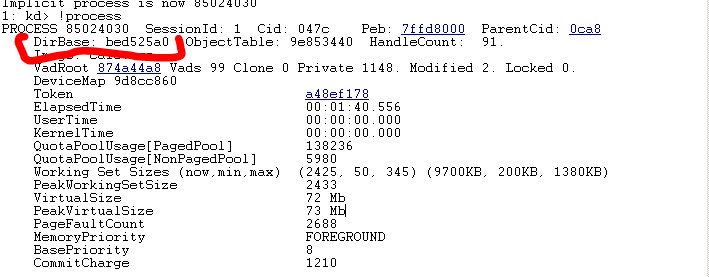
También se puede hallar a partir del EPROCESS
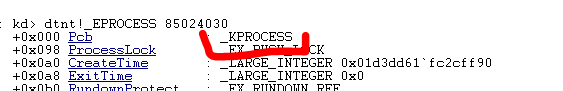
Como esta allí dentro de KPROCESS y tiene la misma dirección dumpeamos KPROCESS
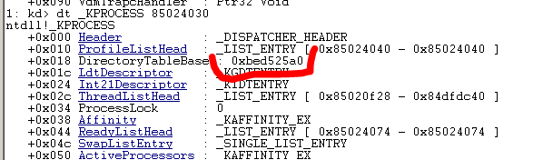
Y allí nos dice que la dirección física es 0xbed525a0 coincide.
Si uso el comando dd para mirar esa dirección de memoria.
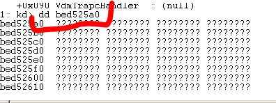
No hay nada allí debería estar la tabla, el problema es que el comando dd sirve solo para mostrar direcciones virtuales, no las físicas, para ello se usa el comando !dd con el signo de admiración delante.
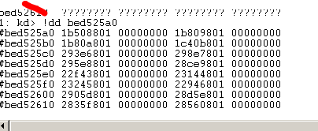
Ahora si estamos bien.
Vamos a asumir que PAE esta habilitado se puede chequear así y hoy día es casi norma que lo esté, el que tiene dudas de lo que es vea acá
https://es.wikipedia.org/wiki/Extensi%C3%B3n_de_direcci%C3%B3n_f%C3%ADsica
Se chequea asi
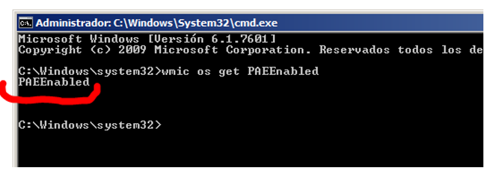
Hay una tablita más (cuando PAE está habilitado) que ahí no se muestra que es PDPT table que es una tabla que cada entrada apunta a una PAGE DIRECTORY es como una tabla intermedia entre CR3 y PAGE DIRECTORY, igual no cambia nada eso.
Mirando la tablita Page Directory y viendo las entradas, ahí mismo nos muestra que cada entrada apunta a otra tabla llamada PAGE TABLE.
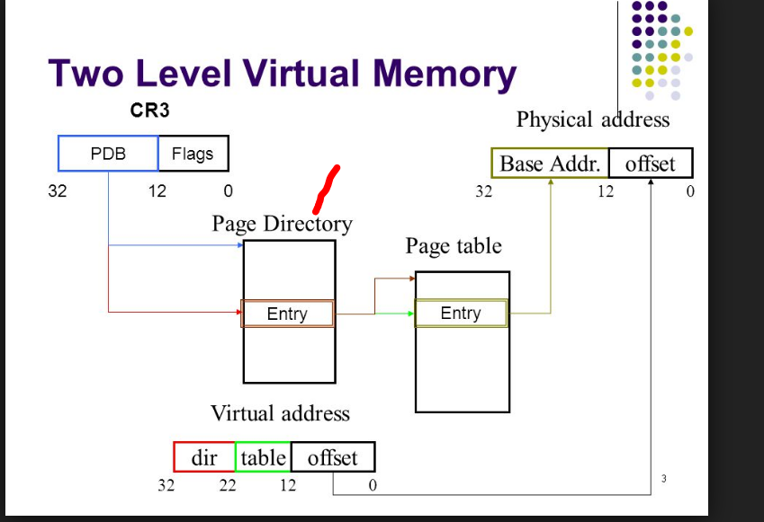
Así que cada PAGE DIRECTORY tiene 1024 entradas, donde cada una (llamada PDE), apunta a una PAGE TABLE.(PT)
Si utilizo el comando !dq en el valor de cr3, veo la tabla intermedia PDPT en hay 4 entradas y cada entrada es de 8 bytes y el contenido apunta a la PDT. (aunque eso depende de un detalle que faltaba que explico un poco mas adelante, en este caso toma la primera de las 4 entradas de la PDPT y asi seguimos el tute buscando el contenido de ese primera entrada y dicho contenido es la base de la PDT, pero la PDPT tiene cuatro entradas y puede usar las otras entradas, mas adelante explico en que caso )
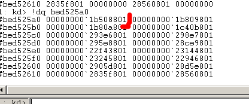
Así que ya la primera entrada de la PDPT tiene el valor en mi maquina 0x1b508801 con la cual apuntamos a la base de la PT (hay que poner a cero los 12 bits inferiores de esta dirección), luego de eso tenemos la dirección física base de la PT.)
Me queda pasado a binario.
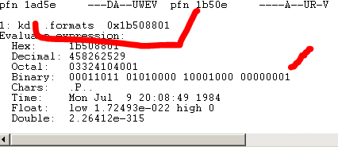
00011011 01010000 1000-100000000001
Ya que los 12 de la parte baja son offset los reemplazo por ceros para que me de la base
00011011010100001000000000000000
Esto pasado a Hexa me da 0x1B508000 que sería la base de la PDT
Ahora que ya obtuvimos la dirección física de la base de la PDT, vamos a hacer .reload /f para que cargue todos los módulos.
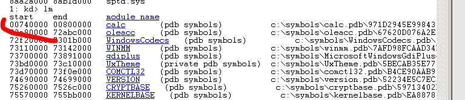
Luego con lm veo que la base del ejecutable calc es 0x740000, así que ese será el header del ejecutable, veamos.
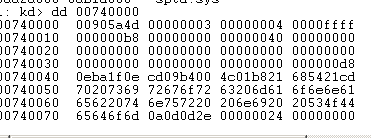
Es el típico header con el MZ etc
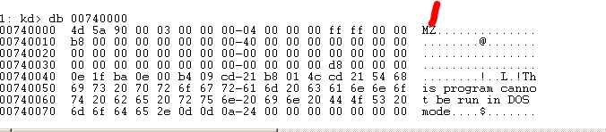
Tomemos esa dirección 0x740000 trataremos de hallar su dirección física
Una dirección virtual como 0x740000 se puede dividir en
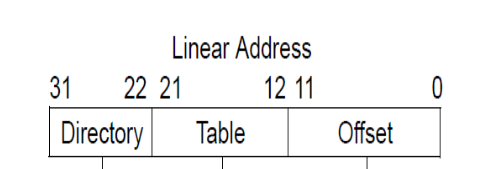
Así que la pasamos a binario.
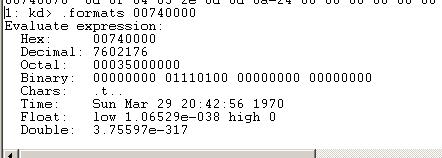
00000000 01110100 00000000 00000000
Separando los últimos 12 bytes, luego dos partes de 9 y una de 2 eso nos da 12+9+9+2=32 bits
00-000000011- 101000000 – 000000000000
Bueno los 12 bits mas bajos , son los 12 bits mas bajos de la dirección física o Byte Index (000000000000)
Los siguientes 9 bits son un índice a la PAGE TABLE o Page table index (101000000)
Los siguientes 9 son un índice a la PAGE DIRECTORY o Page directory index (000000011)
Aqui faltaba agregar que esos dos bytes mas altos, marcan que numero de entrada de las cuatro que hay en la PDPT se va a usar, en este caso esos dos bytes son cero, asi que se utiliza la primera entrada de la PDPT por eso no habia problema, sino se usan las que entradas que estan a continuacion segun el numero de ese indice de esos dos bytes)
PDPT index=0x0
Page directory index = 000000011 = 0x3
Page table index = 101000000 = 0x140
Byte index = 000000000000 = 0x0
Recordemos que 0x1B508000 era la base de la PDT, como cada entrada tiene 8 bytes si quiero encontrar la dirección de la tercera entrada ya que el índice es 0x3.
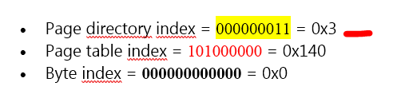
hex(0x1B508000+ 0x3*8)
Obtengo la dirección física de la tercera entrada.
'0x1b508018'
Esta es la PTE sabemos que su contenido apunta a la PT, veamos el contenido
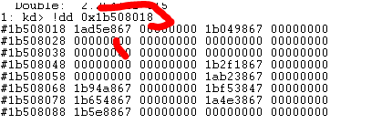
A esa dirección le debemos quitar los 12 bits inferiores y completarla con ceros para dejar la base
1ad5e867 00011010 11010101 11101000 01100111
La base seria
00011010 11010101 11100000 00000000
Si lo unimos
00011010110101011110000000000000
Por lo tanto la base de la PT de mi dirección es
0x1AD5E000
Hago lo mismo que con la otra tabla busco el índice de la PT que en mi caso era 0x140, como cada entrada es de 8 bytes de largo multiplico por 8 y le sumo la base.
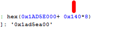
Eso me da '0x1ad5ea00' que es la PTE, el contenido de la misma es la Base Address
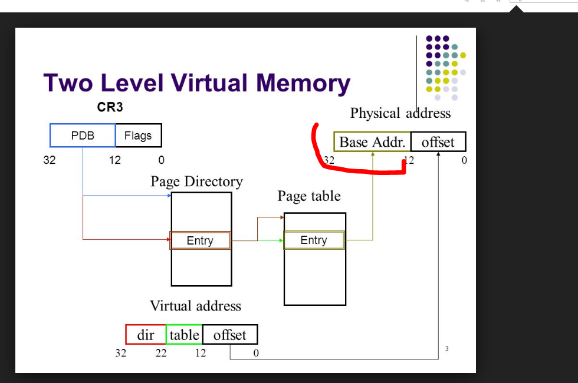
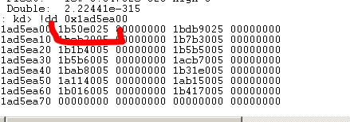
Allí vemos en el cuadrito que la dirección física esta compuesta por base address + offset
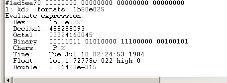
Ahora debemos reemplazar los 12 bytes menores por el Byte Index de la dirección buscada.
00011011 01010000 11100000 00100101
Queda
000110110101000011100000 00000000
Que es
0x1B50E000 que es la dirección física o real correspondiente a la dirección virtual 0x740000
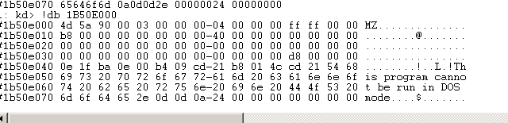
Si comparo con el contenido de la dirección virtual
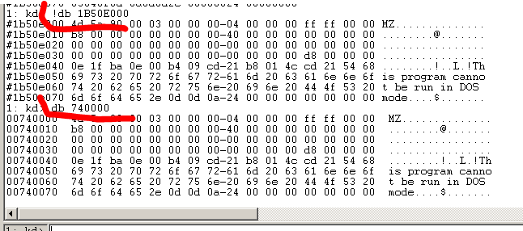
Vemos que es similar
Ahora hay alguna forma más fácil de obtener una dirección física de acuerdo a una dirección virtual, se puede hacer en Windbg con el comando !pte.
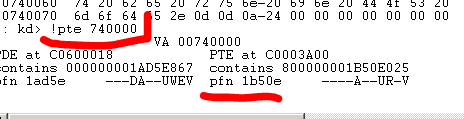
Ese numero pfn lo multiplico por 0x1000
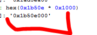
A eso le debo sumar el Byte Index o sea los últimos 12 bits de mi dirección, en mi caso es 0, así que ya obtuve la dirección física de la misma forma que antes, pero la idea era conocer las tablas ya que para trabajar en kernel hay que conocer todo jeje.
Bueno a tragar la medicina que es amarga jeje
Hasta la próxima
Ricardo Narvaja